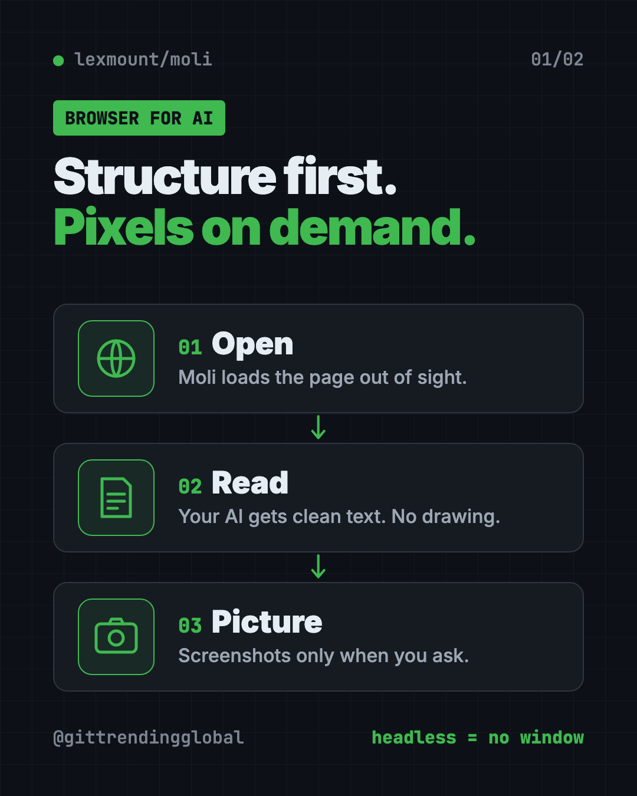
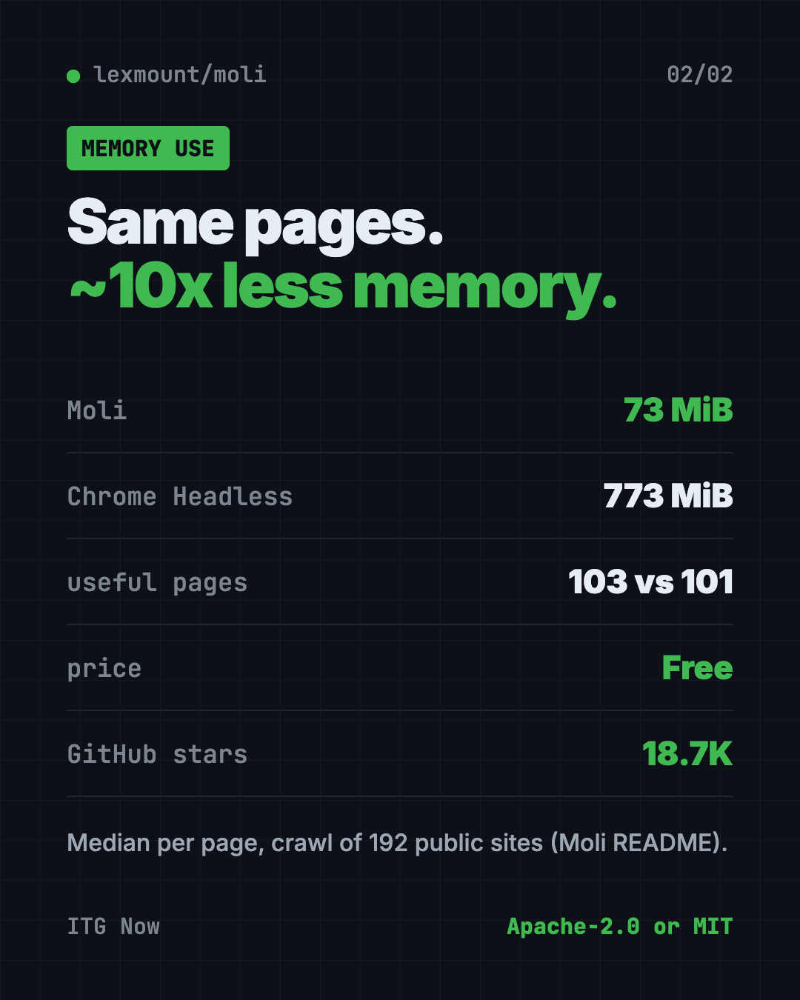

Moli: A Free, Light Headless Browser for AI Agents
- Published 15 Oct 2026
- Updated 16 Oct 2026
- 6 min read
- License Apache-2.0 / MIT
- By the ITG Now team
Moli is a free, open-source headless browser for AI agents. It lets your AI helper open websites, read them, search the web and click around, all without a visible window and with far less memory than Chrome.
"Headless" simply means the browser runs out of sight. There's no window for you to look at. Your AI reads the page directly.
Key takeaways
- Built for AI, not people. Moli fetches and reads web pages for your AI helper.
- Light on memory. In the README's crawl test, Moli used 73 MiB per page at the median. Chrome Headless used 773 MiB.
- Works with common tools like Playwright, through standard browser "remote control" protocols.
- Free and open source. You pick Apache-2.0 or MIT.
- Mac, Windows and Linux. About 18.7K stars on GitHub.
What is Moli?
AI helpers are getting good at research and tasks on the web. But to read a website, they need a browser.
Most tools borrow a full browser like Chrome and hide its window. That works, but it's heavy. Chrome keeps drawing every page, even when no one is looking.
Moli takes a different path. The README's motto is "Structure first. Pixels on demand." Most AI tasks only need the page's text and structure, not a picture of it. So Moli skips the drawing step unless you ask for it.
It still has a full engine inside: real JavaScript, styles, cookies and storage. It just does the visual work only when needed, like for a screenshot.
Moli is made by Lexmount, which also sells a managed cloud version. The README is clear that the open-source browser is "fully usable" without it.

What can Moli do?
From the README:
- Turn a web page into clean text. It can give your AI the page as Markdown, HTML, JSON or a compact outline.
- Take screenshots and PDFs when you turn on layout with
--layout. - Click and fill things. You can run a small script on the page, like clicking a "show details" button, before saving it.
- Act as a browser server for automation tools like Playwright, Puppeteer and Selenium.
- Handle modern sites with JavaScript, cookies and saved browser profiles.
How to use Moli (real examples)
- Research for you. Ask your AI to read five articles on a topic and sum them up. Moli fetches the pages as clean text.
- Track prices or news. Have your AI check a few pages each morning and tell you what changed.
- Save a page as a PDF. Use
--layoutand--dump pdfto keep a copy of a page. - Grab a full-page screenshot for a report or a bug note.
- Run many browsers at once. Because each one is light, a business can run more AI web tasks on the same machine.
💡 Tip: If you just want your AI to read a page, skip
--layout. The README says plain text tasks never need the visual step, which keeps them fast and light.
Is Moli better than Chrome?
For AI tasks, Moli is lighter. For full accuracy, Chrome still wins. The README is open about both.
In a crawl test of 192 public websites:
| Browser | Useful pages | Median time | Median memory |
|---|---|---|---|
| Moli | 103 | 1.43 s | 73 MiB |
| Chrome Headless | 101 | 1.43 s | 773 MiB |
In a bigger benchmark of 1,308 tasks, Chrome passed 99.85%. Moli 0.1.1 passed 81.88%. That's ahead of other light browsers in the test, like Lightpanda and Obscura.
The README also says Moli used about 15% of Chrome's processing time and 13% of its peak memory in a separate run.
⚠️ Heads up: Moli does not try to look pixel-perfect like Chrome. It doesn't aim for great Canvas, WebGL or video playback. If your task depends on exact visuals, test it first.
Moli at a glance
| Price | Free |
| Works offline | No, it browses the live web |
| Platforms | Mac, Windows, Linux |
| License | Apache-2.0 or MIT (your choice) |
| Built with | Rust, with Google's V8 JavaScript engine |
| Works with | Playwright, Puppeteer, Selenium and AI helpers |
| Best for | Developers and teams running AI web tasks |

How to install Moli
These are the official steps from the README.
On Mac or Linux, open Terminal, then copy and paste this:
curl --proto '=https' --tlsv1.2 -fsSL \
https://github.com/lexmount/moli/releases/latest/download/moli-installer.sh | sh
On Windows, open PowerShell, then copy and paste this:
powershell -ExecutionPolicy ByPass -c "irm https://github.com/lexmount/moli/releases/latest/download/moli-installer.ps1 | iex"
Try it on a test page. Copy and paste this to get the page as clean text:
moli fetch \
--dump markdown \
--wait-until done \
https://example.com
Want a screenshot instead? Copy and paste this:
moli fetch --layout --dump screenshot https://example.com > page.png
To start Moli as a browser server for automation tools, copy and paste this:
moli serve
Let Claude or Codex set it up for you
Claude Code and OpenAI Codex are AI helpers that run setup steps on your computer. You paste a request and approve each step.
The README gives this exact prompt for your AI helper. Copy and paste this:
Install the skills under https://github.com/lexmount/moli/tree/main/skills,
follow their instructions to download and install the latest prebuilt Moli
binary, then use moli-webfetch to fetch https://example.com and show me the
result.
Then try asking:
Use Moli to read these three web pages and give me a 5-bullet summary of each.
Use Moli to save a full-page screenshot of my website's home page.
Connect my Playwright script to Moli instead of Chrome and compare memory use.
Our take
Moli is a smart answer to a real cost problem. AI agents browse a lot, and full Chrome is heavy. Moli does the same reading job on a fraction of the memory.
What we like:
- Far lighter than Chrome for reading pages.
- One file does everything: no separate Chrome or driver to install.
- Honest benchmarks that show where Chrome still wins.
- Free under your choice of two friendly licenses.
- A ready-made prompt to let your AI install it.
What to watch for:
- It passes fewer tasks than Chrome in the big benchmark.
- No visible window, so it's not a browser for everyday browsing.
- Not built for pixel-perfect visuals, WebGL or video.
- It's young (version 0.1.x) and moving fast.
Want your AI to click around websites in a full browser? Read our agent-browser guide. To shrink what your AI reads, see Caveman and Headroom.
FAQ
What is a headless browser for AI agents?
It's a web browser with no window, made for AI helpers. It loads pages and hands their content to the AI instead of showing them on screen.
Is Moli free?
Yes. Moli is free and open source. You can use it under the Apache-2.0 or MIT license.
Does Moli replace Chrome?
Not for everyday browsing. It has no window. For AI reading tasks it can replace headless Chrome and use far less memory.
Does Moli work with Playwright?
Yes. The README shows Playwright connecting to Moli through Chrome's remote control protocol (CDP).
Can Moli take screenshots?
Yes. Add --layout and ask for a screenshot, a full-page screenshot or a PDF.
Do I need a Lexmount account to use Moli?
No. The README says the open-source browser is fully usable without Lexmount's paid cloud product.
Get Moli: github.com/lexmount/moli
Keep reading

REA: Reverse Engineer Anything With Your AI Agent
REA (Reverse Engineer Anything) lets an AI agent look inside an app and explain how a feature works, with proof. What it does, what it misses, and the risks.

DBX: Free Database Client for 100+ Databases, With AI
DBX is a free database client that opens 100+ kinds of databases in a 25 MB app. Its AI helper turns plain English into database queries for you.

PureMac: Free CleanMyMac Alternative, No Subscription
PureMac is a free CleanMyMac alternative. It clears junk, fully uninstalls apps and finds duplicates, with no subscription, no tracking and no scare tactics.